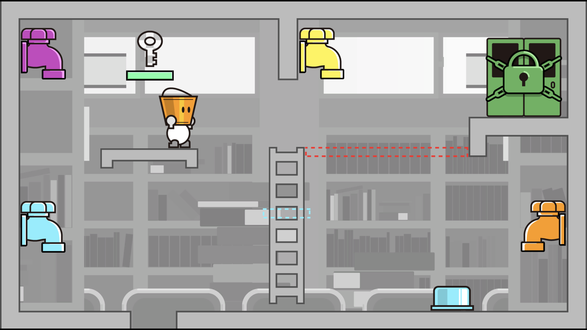
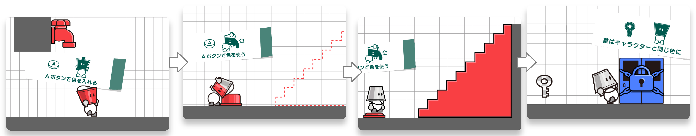
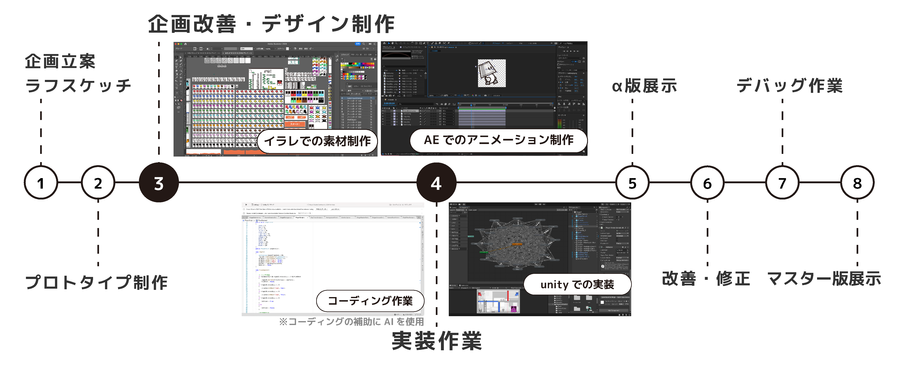
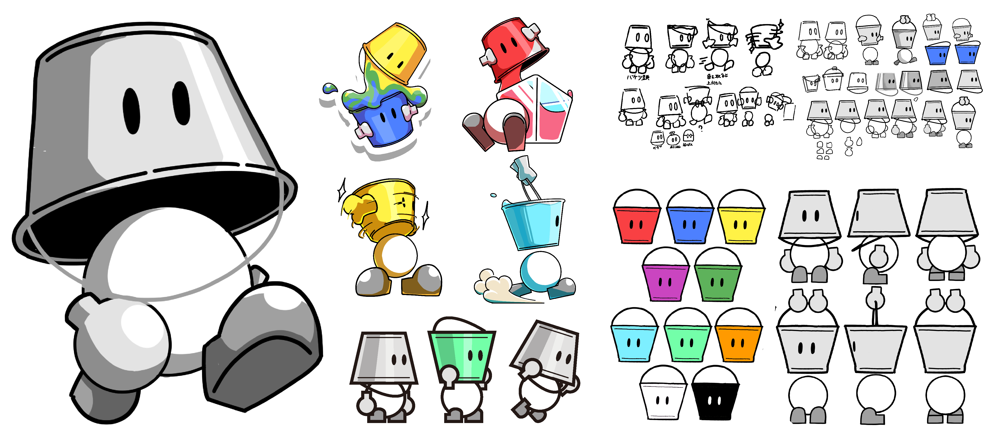
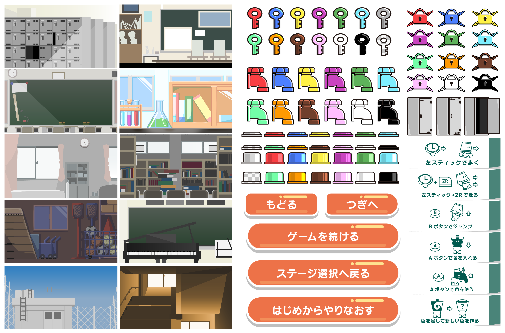

コンセプト
プレイすると色に詳しくなるゲーム

美術や色に対する関心の薄さを感じ、この作品を通じて少しでも関心の種を植えられたらと思い、制作しました。 そのため、ターゲットを特定の年齢層や性別に絞らず、 誰もが親しみやすいゲームを目指しています。
スイッチに色をつけ、ギミックを解いてゴールに辿り着こう！

制作プロセス
企画から展示まで一人で制作

デザイン制作は勿論のこと、コーディング作業や実装作業など含め全て一人で制作しています。 初めてのゲーム制作だったため、Unityの使い方やC＃のことを作りなから学ぶというプロセスで制作しました
大学の卒業制作展で展示を行いました。ゲーム好きな人は勿論、ゲームをプレイしたことのないお年寄りや、小さい子どもなど様々な人にプレイし楽しんでいただくことができました。
デザイン
万人が受け入れるデザインを目指して

色をモチーフにする上で筆や絵の具は美術が近くに無い人にとって親しみやすさに欠けると考えあえて少し離れたバケツをモチーフにキャラクターを作りました。 デザインはシンプルで誰でも直感でわかるようにしつつ、バケツの頭を使ったアニメーションで個性を出しています。

色をモチーフにする上で筆や絵の具は美術が近くに無い人にとって親しみやすさに欠けると考えあえて少し離れたバケツをモチーフにキャラクターを作りました。 デザインはシンプルで誰でも直感でわかるようにしつつ、バケツの頭を使ったアニメーションで個性を出しています。
老若男女誰が見ても分かるように ボタンを大きくしビジュアルのみでも理解できるようにしています。 また要素が少なくても退屈にならないようにアニメーションを多く設定しています。